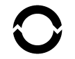
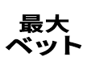
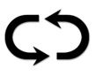
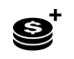
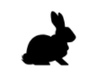

ハロウィーンフィーバーのビデオスロットへようこそーハロウィーンのお祭りがテーマです。ゲームは、リールベースゲームボーナス、フリースピン機能その他多くのエキサイティングな機能を特徴とします。
ゲームについて
ハロウィーンフィーバーは、10の固定ペイラインでプレイします。ゲームには11のレギュラーシンボル、ワイルド1つ、スキャッターシンボル1つがあります。
墓地略奪の機能
墓地略奪機能は、ノンウィニングスピンでランダムにトリガーされます。機能している間、墓から手が出て、勝ちを構成するために必要なシンボルが明らかになります。
至近距離のスキャッタースピンでランダムに、手が他の3つのリールから1つ以上挙がり、フリースピンを獲得するための1つ、2つ、さらには3つのスキャッターシンボルを明らかにします。
あるシンボルの失われた至近距離スピンでランダムに、手が他のリールから1つ以上挙がり、勝ち組み合わせをつくるために必要なシンボルを明らかにします。
フリースピン
3つ以上のパンプキンシンボルは、位置に関わらず10回のフリースピンをトリガーします。
墓地略奪機能にアトランダムにピックしたシンボル
墓から手が挙がり、同種の勝ちの2つのリール１または2のあらゆる位置のランダムなシンボル、または同種の勝ちの3つのリール１、2、または3のあらゆる位置のランダムなシンボルを明らかにします。９、10、クイーン、狼男、スキャッターとワイルドは、同種の勝ちの2つに対してピックされます。機能の間にスキャッターが明らかになる時、リールの上に見えるのはスキャッターシンボルだけです。J、Q、K、A、スカル、ブラックローズおよび生霊は、同種の勝ちの3つに対してピックされます。 残りのリールはスピンし、ファイナルウィンを明らかにします。
プレイ方法
-
ステーク/コイン呼称をセレクトしてください。
-
ゲームサイクルをスタートするには、スピンボタンをクリック（デスクトップの場合）またはタッチ（モバイルの場合）してください。
ゲームボタン
|
アイコン |
デスクトップ |
モバイル |
アクション |
|
 |
スピン | スピン | シングルサイクルが始まります. |
|  | 最大ベット | （設定メニューのステークセレクションスクリーンに含まれています） | ベットは一を最大ステークレベルに設定します。始めるためにスピンボタンが押されました。 |
|  | オートプレイ | オートプレイにはスピンをホールドダウンしてください （あるいは設定メニューに含まれます） | ゲームで使えるすべてのオートプレイオプションを提示するメニュースクリーンを起動して、複数のサイクルを同時に始めます。 |
|  | ステークセレクション | ステークセレクション （あるいは設定メニューに含まれます） | プレイヤーが賭けレベルをセレクトするようにステークオプションを起動します。 |
|
|
設定メニュー | 設定メニュー | 次を提示する別の設定スクリーンを開きます：ホーム;オーディオ;ゲーム設定;履歴;情報/ヘルプそしてキャッシャー（必要な場合）. |
|
|
オーディオ | （メイン設定エリアは、設定メニューにあります） | デスクトップ－オーディオ設定メニューを開いてプレイヤーが音楽や効果のスイッチのON/OFF切替を独立してできるようにします。 |
|  | ターボプレイ | （ゲーム設定メニューにあります） | リールのスピードをクイックスピンに変更します |
設定ボタン
| シンボル | アイコン | 行動 |
| キャッシャー |
|
プレイヤーがそれらのアカウントに資金を足すよう、オペレーターのデポジットページに戻ります（オペレーターシステムにある機能性を仮定）. |
| ペイテーブル & ヘルプ |
|
ゲームに対する全体ペイテーブルと機能説明の詳細。 |
| ゲームの履歴 |
|
このゲームセッションでプレイされたゲームサイクルのリストをプレイヤーに提示します。 |
| ベット設定 |
|
ここから、プレイヤーはゲームのステークバリューを限定したり、他の使えるオプションを何でもセレクトできます。 |
| オートプレイ |
|
ロスリミットを含む（該当する場合）様々な標準および拡張オートプレイオプションがセレクトでき、始められるページを起動します。 |
| ゲーム設定 | 様々な一般設定オプションを表示します（例：セッションの間に流したいサウンドをプレイヤーが決定するためにセレクトできるオーディオ設定） | |
| ホーム |
|
現在のゲームセッションを終了し（最終プロンプトの後）、スクリーンをオペレーターメインゲームメニューページに戻します。 |
他のゲーム情報
-
異なるラインで一致する勝ちは一緒に加算されてプレイヤーに支払われます。
-
コインバリュー‐現行設定の理論上ステークプライスを表示します。すべての勝ちはコインに提示され、コインバリューを掛け、キャッシュプライスにコンバートします。
-
ベット‐現行設定のベットバリューを提示します。ベットのサイズは固定ペイライン数を掛けた1コインです。
-
合計ベットは10コインのベットマルチプライヤーを掛けます。
-
最大ベット（デスクトップのみ）－コインバリューを最大に設定します。
-
スピンボタン‐ゲームを始めます。リールがスピンしていると、スピンボタンはターボストップボタンに変化します。ターボストップボタンを押して、リールを直ちにストップしてください。
-
オートプレイ‐毎回スピンボタンを押さずにプレイできるようにゲームを設定できます。 ラウンドの数を選んで、オートプレイボタンを押すことで自動でプレイします（モバイル用では、スピンボタンをホールドダウンしてオートプレイメニューを開きます）。 該当する場合は、ゲーム設定でオートプレイをストップする時間を追加条件として選ぶことができます。 いくつかのゲームクライアントバージョンにおけるロスリミットは、オートプレイセッションの間に設定リミットを失わないようにできます。 オートプレイを手動でストップするには、ストップオートプレイを押してください。
-
勝ち‐現行の勝ちあるいは最近支払われた勝ちを表示します。
-
キャッシュ/コイン-キャッシュ（金銭価値）またはコイン（クレジット数）でアカウントの収支を表示します。プレイヤーが選べます。規定表示はキャッシュです。
-
キャッシュからコインあるいはコインからキャッシュへの換算は、できる限り元のバリューに近づけるため、小数点以下二桁で行われます。ゲーム中は、コインの換算は整数で表示されます。
プレイヤーの利益
-
プレイヤーへの理論上の全体利益は95.92%です。
追加情報